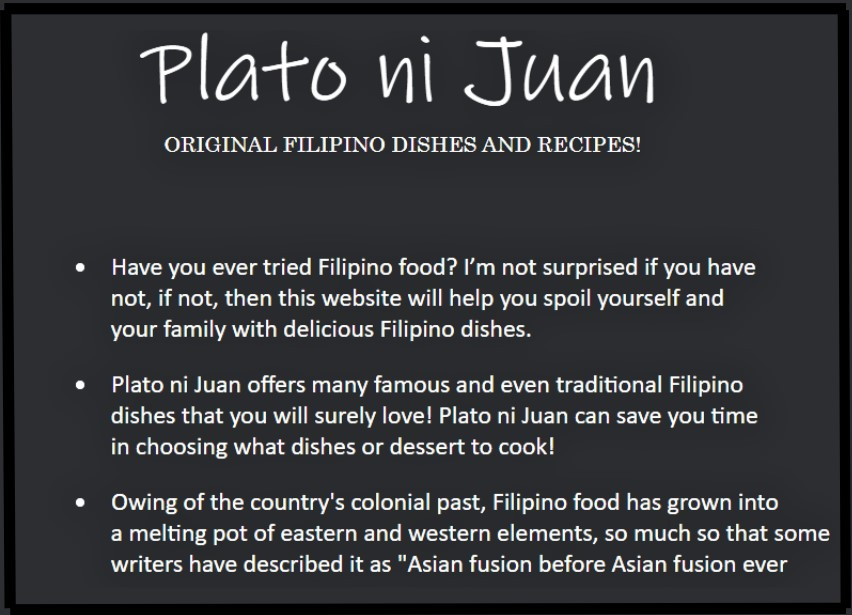
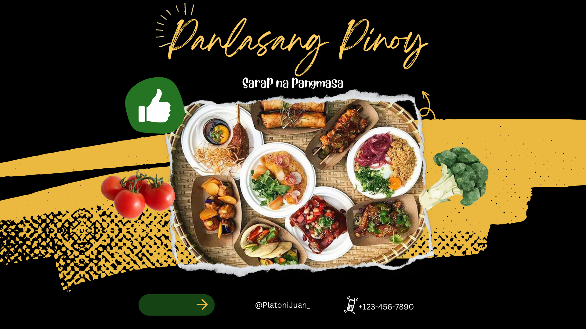
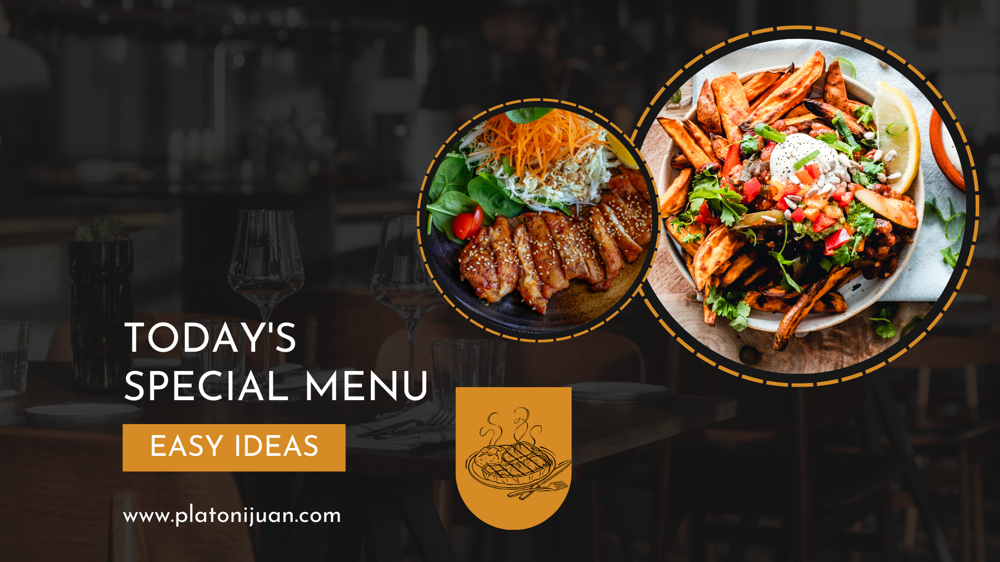
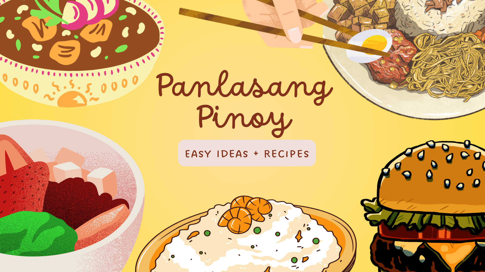

About Plato ni Juan
A love letter to Filipino cuisine — made for every Juan, from every corner of the Philippines.
Sharing the Heart of Filipino Cooking
Plato ni Juan is a Filipino recipe website dedicated to preserving and sharing the authentic flavors of Filipino cuisine. Whether you're a seasoned cook or just discovering the joys of Pinoy cooking, our recipes are crafted to guide you every step of the way.
From the beloved adobo to festive lechon, every dish on our site carries with it a story — of family, tradition, and the incredible diversity of the Philippine archipelago.
Explore Recipes
Why Plato ni Juan?
Authentic Recipes
Each recipe is carefully researched to ensure it represents the true flavors and techniques of Filipino cooking.
Rich Context
We go beyond ingredients — every recipe includes the history and cultural background of the dish.
For Every Cook
From beginners to experienced cooks, our step-by-step instructions make Filipino cooking accessible to all.
Regional Diversity
We feature dishes from across the Philippine archipelago — Luzon, Visayas, and Mindanao all represented.
Food, Culture & Community



Over 50 Curated Recipes
Chicken
10 recipes
Pork
10 recipes
Fish & Seafood
10 recipes
Vegetables
10 recipes
Desserts
10 recipes